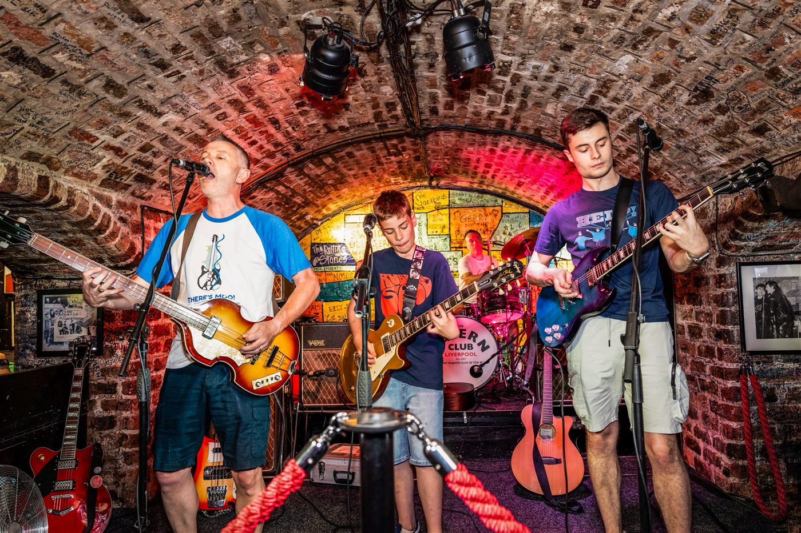
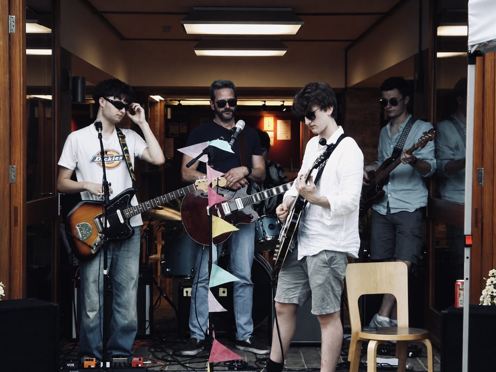

A Face For Radio
A weekly music show that's basically me getting far too excited about bass players, playing you songs I love, and reading out the week's music gossip like it's breaking news.
📻 Live Tuesdays, 9–10am · CamFM 97.2
What's actually in the show
Every episode moves around a bit depending on what I'm excited about that week, but it usually looks something like this:
Low End Legend of the Week
A deep dive into one bass player — who they are, what they've played on, and one song that proves why they deserve your attention.
Live Music Education
A live recording, picked to show a band or artist stripped of studio polish — all the rawness and feel you don't always get on the record.
The News
Three quick music headlines from the week — chart news, reunions, gear drama, industry gossip — read like a proper bulletin. Catch up on it here.
Back to Back Bangers
Two songs, back to back, minimal chat. Sometimes I even shut up for a bit.
Every so often there's also Guess the Song — a stem-splitter game where I build a track up from just the drums and you guess it live in the chat. And every now and then a themed special sneaks in too.
Who's behind the mic
I'm Patrick — first-year Geography student at Christ's, originally from Liverpool, and I've been playing bass since I was six. This show is basically an excuse to talk about the instrument nobody else wants to talk about.
More about the show →